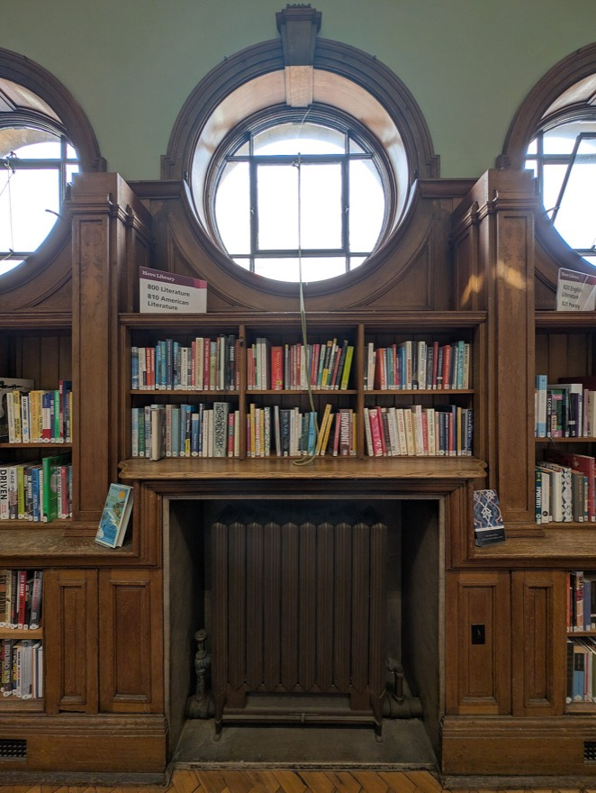

1,000조각 퍼즐을 맞출 때 아무 조각이나 집어서 모든 자리에 대 보는 사람은 없어요. 가장자리 조각부터 맞추거나 무늬가 뚜렷한 조각을 먼저 찾아요. 쓸데없는 시도를 줄이는 거예요.
호텔에서 내 방을 찾을 때도 그래요. 복도의 표지판을 보면 한쪽 방향은 아예 안 가 봐도 돼요.
34차시 · 12주차 · Ⅲ 알고리즘 전체 보기
코드 아래 💡 코드 설명을 펼쳐 보고, 빈칸이 있으면 채운 뒤 실행해 보세요.
교과서 · Ⅲ 2-2 탐색 기반 알고리즘의 설계 — 탐색 공간 배제
“볼 필요 없는 곳은 아예 보지 않는다.” 탐색을 빠르게 만드는 가장 강력한 생각이에요. ‘배제’는 빼놓는다는 뜻이에요.
찾아볼 곳의 일부를 빼놓고도 정확한 답을 구할 수 있을까?
1,000조각 퍼즐을 맞출 때 아무 조각이나 집어서 모든 자리에 대 보는 사람은 없어요. 가장자리 조각부터 맞추거나 무늬가 뚜렷한 조각을 먼저 찾아요. 쓸데없는 시도를 줄이는 거예요.
호텔에서 내 방을 찾을 때도 그래요. 복도의 표지판을 보면 한쪽 방향은 아예 안 가 봐도 돼요.
전체 탐색은 정확하지만, 살펴볼 것이 많아지면 평생 기다려도 끝나지 않아요.
그래서 더 살펴보지 않아도 답을 찾는 데 지장이 없는 부분을 빼고 탐색해요. 이것을 탐색 공간 배제라고 해요. 다만 조심할 점이 있어요. 답이 있는 곳을 실수로 빼 버리면 답을 영영 찾지 못해요.

친구가 1부터 100 사이의 숫자 하나를 생각했어요. “50보다 커?” 하고 물으면 대답이 무엇이든 후보 절반이 한꺼번에 사라져요. 다시 남은 범위의 가운데를 물으면 또 절반이 사라지고요. 이렇게 하면 7번만 물어도 반드시 맞힐 수 있어요. 1부터 차례로 물으면 최악에는 100번을 물어야 하는데 말이죠.
이진 탐색(binary search)은 정렬된 자료에서 가운데 값과 비교해 절반을 버리는 일을 되풀이하는 알고리즘이에요. 1부터 100까지 순서대로 놓인 수에서 77을 찾아볼게요.
100개 가운데서 7번 만에 찾았어요. 자료가 2배로 늘어도 비교는 딱 1번만 더 하면 돼요. 그래서 이진 탐색의 시간 복잡도는 O(log n)이고, 하나씩 다 보는 전체 탐색 O(n)보다 훨씬 효율적이에요.
| 자료의 개수 n | 순차 탐색 (최악) | 이진 탐색 (최악) |
|---|---|---|
| 100개 | 100번 | 7번 |
| 1,000개 | 1,000번 | 10번 |
| 100만 개 | 1,000,000번 | 20번 |
| 10억 개 | 1,000,000,000번 | 30번 |
찾을 값을 정하고 다음 단계를 눌러 보세요. 중간값과 비교해 절반을 통째로 버립니다.
16칸짜리 배열이라 최대 4번이면 찾습니다(2⁴=16). 순차 탐색이라면 최악의 경우 16번을 비교해야 합니다.
이진 탐색 구현
def binary_search(arr, target):
lo, hi = 0, len(arr) - 1 # 찾아볼 범위의 왼쪽 끝, 오른쪽 끝
count = 0
while lo <= hi: # 범위가 남아 있는 동안
mid = # 가운데 위치
count += 1
if arr[mid] == target:
print(f'{count}번 비교해서 찾음')
return mid # 찾음
elif arr[mid] < target:
# 왼쪽 절반을 통째로 배제
else:
# 오른쪽 절반을 통째로 배제
return -1 # 못 찾음
numbers = list(range(1, 101)) # 1 ~ 100 (정렬되어 있음)
print('위치(인덱스):', binary_search(numbers, 77))
서울에서 대구를 거쳐 부산까지 가는 길이 아래와 같을 때, 가장 짧은 길을 구해 보자.
① 서울→대구 3가지 × 대구→부산 3가지 = 9가지를 모두 더해 비교해야 해요. ② 어느 길로 대구에 왔든 대구→부산 구간은 똑같으니, 구간마다 가장 짧은 길만 고르면 돼요. 서울→대구에서 3개를 비교해 235km, 대구→부산에서 3개를 비교해 90km. 3 + 3 = 6가지만 보면 되고, 답은 235 + 90 = 325km예요. 긴 길 4개는 더 따져 보지 않고 뺀 거예요.
교과서 · Ⅲ 연습 코드 문제
정렬된 리스트에서 값을 찾되, 없으면 넣어야 할 위치를 반환하는 search_insert(arr, target)을 작성하시오.
[1,3,5,6]에서 5 → 2 (있음) [1,3,5,6]에서 2 → 1 (넣을 자리) [1,3,5,6]에서 7 → 4
이진 탐색이 끝났을 때 lo가 가리키는 자리가 정확히 삽입 위치입니다.
def search_insert(arr, target):
lo, hi = 0, len(arr) - 1
while lo <= hi:
mid = (lo + hi) // 2
if arr[mid] == target:
return mid
elif arr[mid] < target:
lo = mid + 1
else:
hi = mid - 1
return lo # 못 찾으면 여기가 들어갈 자리
arr = [1, 3, 5, 6]
for t in [5, 2, 7, 0]:
print(t, '→', search_insert(arr, t))
코드를 고쳐서 ▶ 실행하면 출력이 맞는지 바로 알려 줘요. 막히면 힌트부터 열어 보세요.
교과서 표처럼 77을 찾는 동안 범위가 어떻게 줄어드는지 출력해요. 다음 범위를 정하는 두 줄의 ___를 채워 보세요. 7회 만에 찾았다가 나오면 성공!
arr = list(range(1, 101))
target = 77
lo, hi = 0, len(arr) - 1
step = 0
while lo <= hi:
mid = (lo + hi) // 2
step += 1
print(f'{step}회 범위 {arr[lo]}~{arr[hi]} 가운데 {arr[mid]}')
if arr[mid] == target:
print('찾았다!')
break
elif arr[mid] < target:
lo = ___
else:
hi = ___가운데 값을 이미 확인했으니 다음 범위에는 mid를 넣지 않아요. 오른쪽으로 가면 mid + 1, 왼쪽으로 가면 mid − 1.
arr = list(range(1, 101))
target = 77
lo, hi = 0, len(arr) - 1
step = 0
while lo <= hi:
mid = (lo + hi) // 2
step += 1
print(f'{step}회 범위 {arr[lo]}~{arr[hi]} 가운데 {arr[mid]}')
if arr[mid] == target:
print('찾았다!')
break
elif arr[mid] < target:
lo = mid + 1
else:
hi = mid - 150과 1은 찾는데 분명히 있는 77과 100은 -1(없음)이 나와요. 범위에 칸이 딱 하나 남았을 때 무슨 일이 생기는지 생각해 보고 한 곳을 고쳐 보세요.
def binary_search(arr, target):
lo, hi = 0, len(arr) - 1
while lo < hi:
mid = (lo + hi) // 2
if arr[mid] == target:
return mid
elif arr[mid] < target:
lo = mid + 1
else:
hi = mid - 1
return -1
numbers = list(range(1, 101))
for t in (50, 77, 100, 1, 150):
print(t, '→', binary_search(numbers, t))lo == hi일 때도 그 한 칸이 답일 수 있어요. 반복 조건에 등호가 필요해요.
def binary_search(arr, target):
lo, hi = 0, len(arr) - 1
while lo <= hi:
mid = (lo + hi) // 2
if arr[mid] == target:
return mid
elif arr[mid] < target:
lo = mid + 1
else:
hi = mid - 1
return -1
numbers = list(range(1, 101))
for t in (50, 77, 100, 1, 150):
print(t, '→', binary_search(numbers, t))1~100 중 비밀 숫자 secret을 컴퓨터가 이진 탐색으로 맞히게 해 보세요. 매번 범위의 가운데를 묻고, 출력은 37: 50 → 25 → 37 (3번)처럼 물어본 숫자들과 횟수예요. 어떤 숫자든 7번 안에 맞히는지 확인해 보세요.
def guess_game(secret):
lo, hi = 1, 100
tries = 0
pass # 여기에: lo~hi의 가운데를 묻고, 크다/작다에 따라 범위를 절반으로 줄이기
for s in (37, 1, 100):
guess_game(s)물어본 숫자를 리스트 asked에 모아 두었다가 ' → '.join(map(str, asked))로 이어 출력해요. 맞히면 break.
def guess_game(secret):
lo, hi = 1, 100
tries = 0
asked = []
while lo <= hi:
mid = (lo + hi) // 2
asked.append(mid)
tries += 1
if mid == secret:
break
elif mid < secret:
lo = mid + 1
else:
hi = mid - 1
print(f"{secret}: {' → '.join(map(str, asked))} ({tries}번)")
for s in (37, 1, 100):
guess_game(s)해설 — 정렬되어 있어야 “가운데보다 크니 오른쪽에 있다”고 말하며 절반을 버릴 수 있어요.
해설 — 2²⁰ ≈ 100만이라서 절반씩 20번 버리면 하나만 남아요. O(log n)의 힘이에요.
자료가 2배로 늘어날 때 이진 탐색의 비교가 딱 1번만 늘어나는 이유를 적어 보세요.